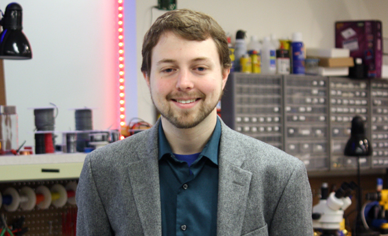

|  |
Branden Ghenabrghena@berkeley.edu 545 Cory Hall
|
I am a PhD student at the University of California, Berkeley in the Electrical Engineering and Computer Science department.
My research focuses on Embedded Systems. I am part of
Lab11 and work with
Professor Prabal Dutta.
I strongly believe in open-access to research, and you can find software and
hardware for all of my projects on Github.
News
- 11/2017: Ran a tutorial session on Tock at SenSys 2017
- 09/2017: Moved to the University of California, Berkeley to continue my PhD studies
- 08/2017: Ran a tutorial session on Tock at Rustconf 2017
- 03/2017: Hosted a tutorial session on using Signpost
- 08/2016: Check out our website on the Tock OS project
- 10/2015: Featured in a Michigan graduate student profile video
- 08/2015: PowerBlade won TI Innovation Challenge 2015 - Best Environmental Impact
- 05/2014: Won an Outstanding GSI Award for Fall 2013
- 04/2014: Awarded an NSF GRFP Fellowship
- 09/2013: Began my PhD studies at the University of Michigan
Publications
2018
- "The Signpost Platform for City-Scale Sensing"
Joshua Adkins, Branden Ghena, Neal Jackson, Pat Pannuto, Sam Rohrer, Bradford Campbell, and Prabal Dutta
In Proceedings of the 17th ACM/IEEE International Conference on Information Processing in Sensor Networks (IPSN’18)
Porto, Portugal, April 11-13, 2018
2017
-
"Energy Isolation Required for Multi-tenant Energy Harvesting Platforms"
Joshua Adkins, Bradford Campbell, Branden Ghena, Neal Jackson, Pat Pannuto, and Prabal Dutta
In Proceedings of the Fifth ACM International Workshop on Energy Harvesting and Energy-Neutral Sensing Systems (ENSsys’17)
Delft, Netherlands, November 5, 2017 -
"Multiprogramming a 64 kB Computer Safely and Efficiently"
Amit Levy, Bradford Campbell, Branden Ghena, Daniel B. Giffin, Pat Pannuto, Prabal Dutta, and Philip Levis
In Proceedings of the 26th Symposium on Operating Systems Principles (SOSP’17)
Shanghai, China, October 28-31, 2017 -
"The Case for Writing a Kernel in Rust"
Amit Levy, Bradfor Campbell, Branden Ghena, Pat Pannuto, Prabal Dutta, and Philip Levis
In Proceedings of the 8th Asia-Pacific Workshop on Systems (APSys’17)
Bombay, India, September 2-3, 2017 -
"Signpost: A Roadmap for City-Scale Sensing"
Branden Ghena, Joshua Adkins, Bradford Campbell, Neal Jackson, Pat Pannuto, and Prabal Dutta
At SRC Techcon 2017 (not a peer reviewed publication)
Austin, TX, USA, September 10-12, 2017
Awarded "Best in Session" in Real-Time System Design Session
2016
-
"Demo Abstract: The Signpost Network"
Joshua Adkins, Bradford Campbell, Branden Ghena, Neal Jackson, Pat Pannuto, and Prabal Dutta
In Proceedings of the 14th ACM Conference on Embedded Networked Sensor Systems (SenSys’16)
Stanford, CA, USA, November 14-15, 2016 -
"Demo Abstract: Swarm Gateway"
Bradford Campbell, Branden Ghena, Ye-Sheng Kuo, and Prabal Dutta
In Proceedings of the 3rd ACM International Conference on Systems for Energy-Efficient Built Environments (BuildSys’16)
Palo Alto, CA, USA, November 16-17, 2016 -
"Perpetual Sensing for the Built Environment"
Bradford Campbell, Meghan Clark, Samuel DeBruin, Branden Ghena, Neal Jackson, Ye-Sheng Kuo, and Prabal Dutta
In IEEE Pervasive Computing
Journal Volume 15, Issue 4, October 2016
2015
-
"PowerBlade: A Low-Profile, True-Power, Plug-Through Energy Meter"
Samuel DeBruin, Branden Ghena, Ye-Sheng Kuo, and Prabal Dutta
In Proceedings of the 13th ACM Conference on Embedded Networked Sensor Systems (SenSys'15)
Seoul, Republic of Korea, November 1-4, 2015 -
"Demo: PowerBlade A Low-Profile, True-Power, Plug-Through Energy Meter"
Samuel DeBruin, Branden Ghena, Ye-Sheng Kuo, and Prabal Dutta
In Proceedings of the 13th ACM Conference on Embedded Networked Sensor Systems (SenSys'15)
Seoul, Republic of Korea, November 1-4, 2015 -
"Ownership is Theft: Experiences Building an Embedded OS in Rust"
Amit Levy, Michael P Andersen, Bradford Campbell, David Culler, Prabal Dutta, Branden Ghena, Philip Levis, and Pat Pannuto
In 8th Workshop on Programming Languages and Operating Systems (PLOS'15)
Monterey, CA, USA, October 4, 2015
2014
-
"Energy-Harvesting Thermoelectric Sensing for Unobtrusive Water and Appliance Metering"
Brad Campbell, Branden Ghena, and Prabal Dutta
In Proceedings of the 2nd International Workshop on Energy Neutral Sensing Systems (ENSsys'14)
Memphis, TN, USA, November 6, 2014 -
"Green Lights Forever: Analyzing the Security of Traffic Infrastructure"
Branden Ghena, William Beyer, Allen Hillaker, Jonathan Pevarnek, and J. Alex Halderman
In Proceedings of the 8th USENIX Workshop on Offensive Technologies (WOOT'14)
San Diego, CA, USA, August 19, 2014